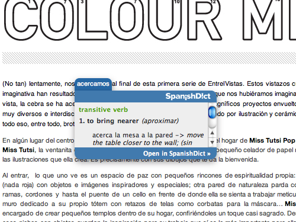

Adds a contextual menu item to perform in-place lookups on SpanishDict.com
Download: http://jgwhite.co.uk/spanishdict/spanishdict.safariextz

The source for this extension is available on GitHub:
http://github.com/jgwhite/Look-Up-in-SpanishDict